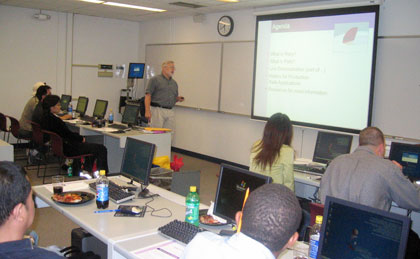

|
 |
 |
|
 |
 |
10/12/2006
Curt Hibbs, Ruby enthusiast and coauthor of Ruby on Rails: Up and Running,
presented on the Ruby programming language.

"At the feature level, Ruby on Rails doesn't offer anything new. Existing web
application frameworks have done it all before. What's the big deal, then? The
difference lies in how Ruby on Rails does it. When you can finish simple web
apps in days instead of weeks and more complicated web apps in weeks instead of
months, people notice!"
"This newfound attention would be short-lived if the resulting
web apps were messy and hard to maintain or extend. Fortunately Ruby on Rails
actually facilitates good programming practices, which leads to well-factored
and easily maintained code."
|
 |
 |